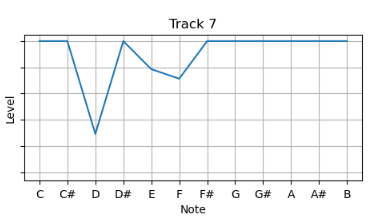

Task 1: Similarity
For this task, I extracted the Chroma features in SonicVisualizer for each track and generated a similarity matrix.
Chroma Features

Matrix
Difference between tracks

12 note similarity

Mean Chroma Features

They Crawl
Time

Now We Are Free